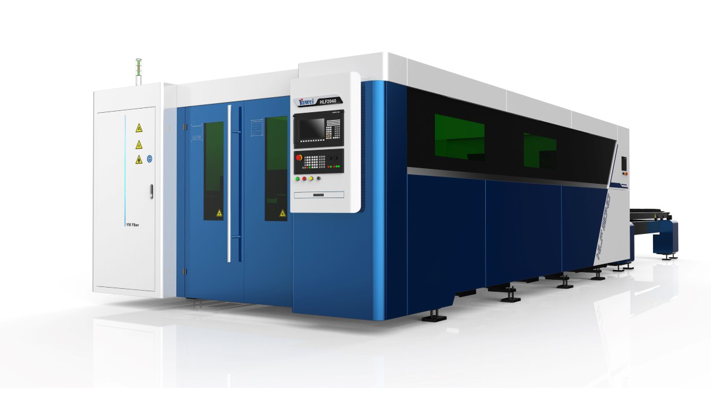

Yawei · Rezanje lima
HLF serija
Visoka kvaliteta izrade stroja, velika brzina rezanja lima i izbor jačine izvora od 3 kW do 20 kW, uz mogućnost nadogradnje automatizacijom.
- Postolje zavareno od čelične konstrukcije i kaljeno u vlastitoj kalionici tvornice.
- Poprečna greda izlivena od legure aluminija iz avio industrije, optimizirana FEA-om.
- Laserska glava Precitec Procutter s auto fokusom, PierceTec probijanjem i CoolTech vodenim hlađenjem lima.
- Prijenos THK / NSK za precizno pozicioniranje i dug vijek trajanja.
- Opcije: kamera za rezanje iz ostatka, FMC utovar i istovar do 20 mm, FMS spremnik sa 6 ladica, Donaldson filterska jedinica, bežično upravljanje.
Tehnički podaci HLF
- Snaga izvora
- 3–20 kW
- Brzina kretanja
- 170 m/min
- Ubrzanje
- 2 G
- Upravljanje
- Siemens SINUMERIK 840
- Laserska glava
- Precitec Procutter
- Formati stola
- 1530 · 2040 · 2060 · 2560